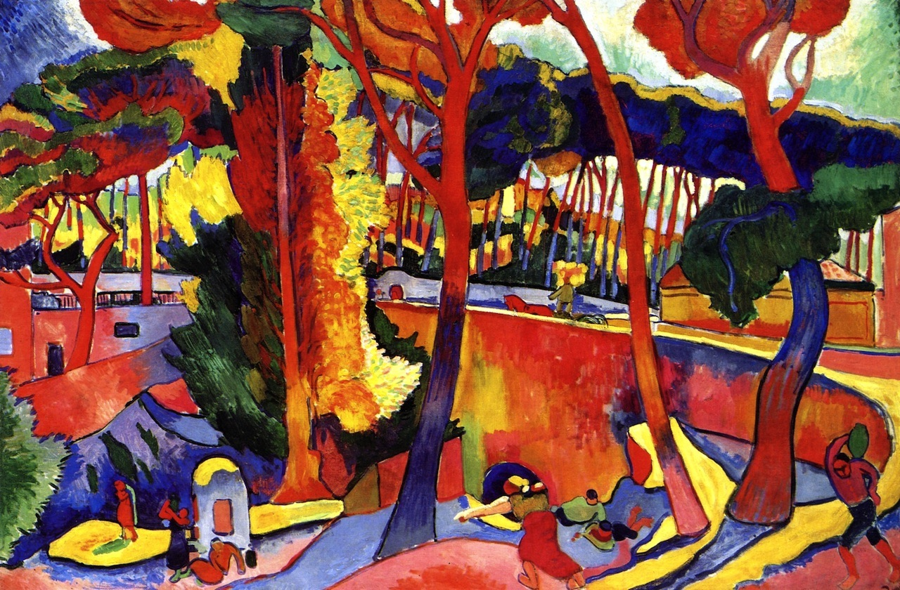
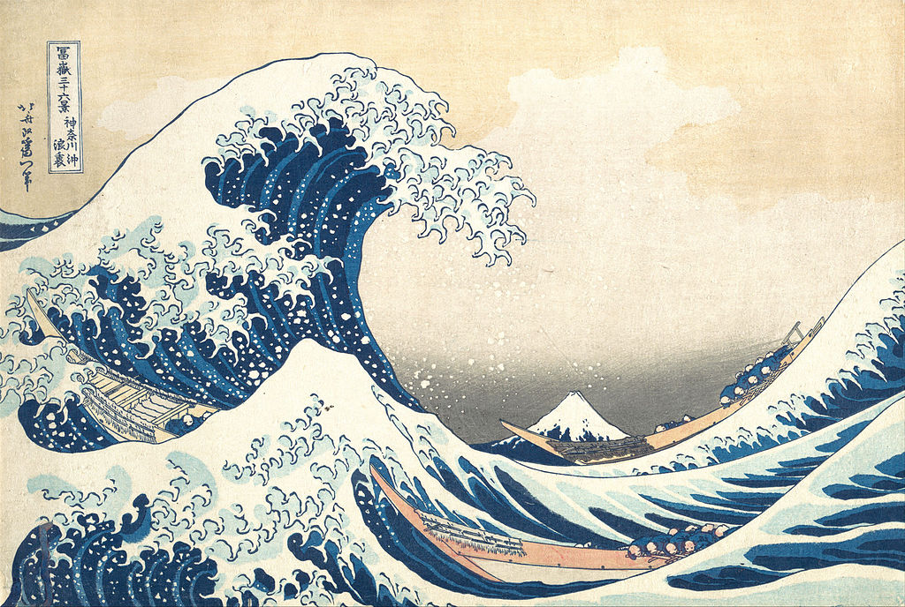

l'Estaque de la route tournante est un tableau d'André Derain, peint en 1880.
Ce tableau arbore des teintes flamboyante et orangées, parsemées de légères pointes de verts disséminées à quelques endroits stratégiques. Cette peinture laisse une impression d'explosion de couleurs
qui irradient l'ensemble de l'oeuvre picturale.

Katsuki Hokusai
Ukiyo-e
Tsunami est un tableau de Katshuki Hokusai.
Cette estampe est l'œuvre la plus connue de Hokusai et la première
de sa fameuse série trente-six vues du mont Fuji. Dans
laquelle l'utilisation du bleu de Prusse renouvelait le langage de
l'estampe japonaise.
La composition de La Vague, synthèse de l'estampe japonaise
traditionnelle et de la « perspective » occidentale, lui valut un
succès immédiat au Japon, puis en Europe, où elle fut une des
sources d'inspiration des impressionnistes.

William Turner
Romantisme
Première peinture à l'huile de William Turner, Fishermen at Sea exposée à la Royal Academy, il s'agit d'une scène au clair de lune dans la tradition d'Horace Vernet, Philip de Loutherbourg et Joseph Wright of Derby.
Ces peintres ont été en grande partie responsables d'alimenter la vogue du XVIIIe siècle pour les sujets nocturnes.
Le sens de la puissance écrasante de la nature est un thème clé du Sublime.
La puissance du clair de lune contraste avec la vulnérabilité délicate de la lanterne vacillante, soulignant le pouvoir de la nature sur l'humanité et le sort des pêcheurs en particulier.
Les silhouettes déchiquetées sur la gauche sont les rochers perfides appelés « les Aiguilles » au large de l'île de Wight.